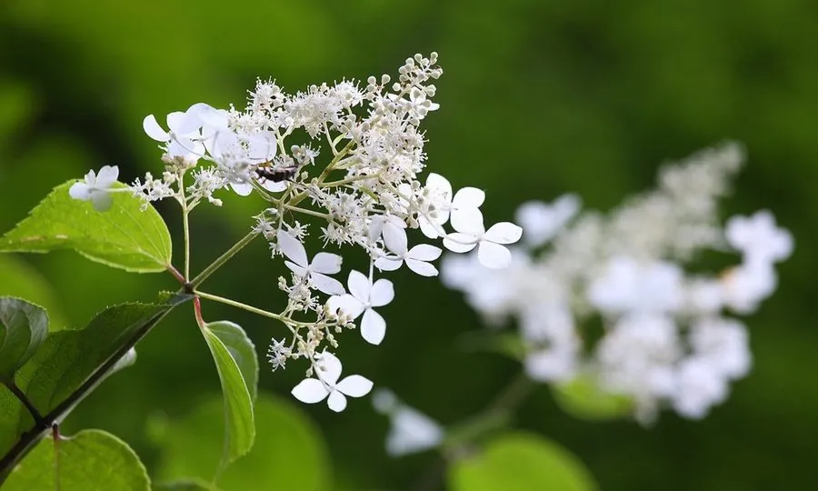

灌木与花木 · 植物界
圆锥绣球 Hydrangea paniculata

绣球花科落叶灌木，夏秋开大型圆锥花序，初开白色后转粉红，耐寒性强，是北方少见的耐寒绣球，适合庭院栽培。
- 分类
- 门被子植物门纲木兰纲目山茱萸目科绣球花科属绣球属
- 栖息环境
- 山坡灌丛、溪边与林缘，喜光也耐半阴
- 地理分布
- 中国长江流域及以南地区；日本有分布
- 保护级别
- 暂无评估；中国未列入国家重点保护野生植物名录
物种志
圆锥绣球为绣球花科绣球属落叶灌木或小乔木，高 1–3 米，枝干粗壮。叶对生，卵形至椭圆形，边缘具锯齿。圆锥花序顶生，长 15–30 厘米，由大量不孕花与可育花组成，初开时白色，后渐转粉红或淡紫，花期 7–9 月；果实为蒴果，果期 9–10 月。
圆锥绣球原产中国长江流域及以南地区，日本也有分布，生于山坡灌丛与溪边。它喜光，也耐半阴，耐寒性在绣球属中较强，适宜疏松肥沃、排水良好的土壤。花序大型、花期长，是夏季花境与庭院的重要花木；栽培中可通过调节土壤酸碱度改变花色，但效果不如大花绣球明显。花后修剪可促进翌年萌发壮枝。
形态与习性
- 株高1–3 米，枝干粗壮
- 花期7–9 月，圆锥花序大型
- 果期9–10 月，蒴果
- 光照喜光，也耐半阴
- 水分喜湿润，忌积水
- 土壤疏松肥沃、排水良好的壤土
- 主要用途夏季花境、庭院观花与切花
趣味知识
- 圆锥绣球的花序呈圆锥状，是绣球属中花序形状最特别的一类。
- 它的耐寒性在绣球属中较强，北方也能露地越冬。
- 初开时花序洁白，后期逐渐转为粉红色，观赏期很长。
- 花后可重剪，翌年从壮枝上抽出更大的花序。